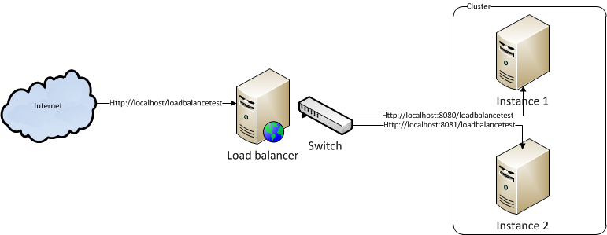
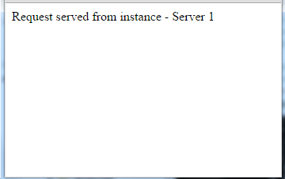
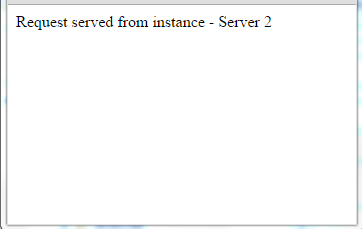

Introduction
Before going through this article we strongly recommend you to go through Load balancer article to understand the basic concept of load balancer.
Nginx is pronounced as engine-x. It is a free, open source HTTP server. Nginx is one of the fastest growing server and as of now hosts nearly 12.18% of active sites across all the domains. Unlike all other traditional servers, Nginx uses event-driven (asynchronous) architecture instead of using threads to handle requests. We can also use Nginx server as the IMAP/POP3 proxy server.
Find more information like documentation, modules, add-ons from wiki link
Usecase
Install the Nginx HTTP server on port 80 and two instances of Tomcat under port 8080 and 8081. Both the Tomcat instances should install an application under context path of /loadbalancetest. Use direct Tomcat URLs like http://localhost:8080/loadbalancetest to process the request through instance 1 on Tomcat server and http://localhost:8081/loadbalancetest to process the request through instance 2.
Now, instead of using the actual Tomcat URL use Nginx HTTP server like http://localhost/loadbalancetest. Load balancer should route the request to instance 1 or instance 2 based on load balancer method.

Note - Multiple instances can run on the same server or different servers. we can use the server ip address instead of using localhost.
Environment setup
Nginx
Download the binaries from the Nginx web site and follow the install instructions.
Tomcat
This setup is optional. you can use any server which supports Servlet and JSP containers. If you want to use Tomcat, download the binaries and install it in two ports like 8080 and 8081.
Web application setup
- Install 2 or more Tomcat instances in local system with different ports or install in two different remote systems
- Download the war file from link
- Open conf/context.xml file from a Tomcat root directory of instance 1 and add below element
<Parameter name="instancename" value="Server 1" override="false/">
- Do the same for all other instances and give the instance name accordingly
- Start/restart all the instances
- Check the instances from the browser that all Tomcat instances are up and running with the application. For example, to test the instance 1, open the browser and type http://localhost:8080/loadbalancetest (I installed instance 1 in 8080 port) and it should display the "Request served from instance - Server 1" message in the browser.
Configure load balancer
Configuring load balance on Nginx server is very simple. Follow below steps,
- We can configure load balancer in default Nginx configuration file nginx.conf which is under a conf folder from the Nginx root directory. For best practice, we are going to create a new file. Create loadbalancer.conf file under conf folder from the Nginx root directory.
- Open nginx.conf file by using any text editor and search for the directive http and
add below line
inside the directive.
include loadbalancer.conf;
Now loadbalancer.conf file looks like below... http { include loadbalancer.conf; include mime.types; default_type application/octet-stream; ... } ... -
Open loadbalancer.conf file by using any text editor and add below script.
upstream mycluster { server localhost:8080; server localhost:8081; }Where mycluster is a name of the group or cluster. You can keep this name as you wish. -
Open again nginx.conf file and add below script under server element and save.
... http { ... server { listen 80; server_name localhost; location /loadbalancetest { proxy_pass http://mycluster/loadbalancetest; } ... } ... }/loadbalancetest is a context name which is deployed under tomcat instances. Now we configured the load balancer that all the requests which comes with /loadbalancetest will be routed to mycluster load balancer. By default Nginx load balancer will use the round robin algorithm to choose the tomcat instance. - Reload the Nginx server
That's it. we are ready with the load balancer. Now let see how to test this configuration
Test load balancing
Hence Nginx HTTP server contains a load balancer, we need to pass the request through a load balancer. Based on algorithm, load balancer will route the request to Server 1 or Server 2. To pass the request through load balancer, open the browser and send a request to http://localhost/loadbalancetest URL.
In the first request, load balancer will choose server1 and if you refresh the browser load balancer will send the request to server2.


Changing load balancer algorithm
Nginx supports different kind of algorithms as mentioned below,
- Round robin
- Weighted round robin
- Least connections
- IP hash
As I explained before by default the Nginx server uses a round robin algorithm to distribute the request across the servers. We can choose the best algorithm which suits for business requirement. Refere Load balancer article to know more.
Weighted round robin algorithm
The Weighted round robin algorithm works based on the weight defined to that server. For example - if you want to balance the load in 2:1 ratio between the server 1 and server 2 that means out 3 request load balancer will distribute 2 requests to server 1 and 1 request to server 2, we can change the load balancer configuration like below,
Open loadbalncer.conf file and update with below script
upstream mycluster {
server localhost:8080 weight=2;
server localhost:8081;
}
If you don't provide the weight of a server, by default Nginx server will
take it as 1.
Least connection algorithm
The Least connection algorithm works based on the server status. This algorithm prefers to send the request to a server which has the least connection among in the cluster. The Nginx load balancer will keep track the application server statistics to know which server has how many requests.
Open loadbalncer.conf file and update with below script
upstream mycluster {
least_conn;
server localhost:8080;
server localhost:8081;
}
Limiting number of connection per server
Nginx also supports to limit the number of parallel requests that can serve by a server. We need to pass this limit per server. See script below,
upstream mycluster {
server localhost:8080 max_conns=2;
server localhost:8081;
}
As per above script, server 1 can process max 2 parallel requests.
Define backup server
As part of highly available, we may need to setup a dedicated application server as backup servers to serve the request if the primary application servers are not available to serve the request. For example, imagine you want to do deployment or periodical maintenance and you don't want to serve any requests from primary servers. In this case we can setup server(s) as backup to process the client requests. See script below,
upstream mycluster {
server localhost:8080;
server localhost:8081;
server localhost:8082 backup;
}
As per above script, third server is a backup or reserved server. This server will get request only if the first two servers are unable to process the requests. Let's say - when server 1 is down the requests will be sent to server 2 or if server 2 is down requests will be sent to server 1. If both server 1 and server 2 are down then the request will be sent to server 3.
Define failover servers
In above scenario we saw how to setup a dedicated server in case primary servers are unable to process the quest. In some cases, if the primary server is unable to process the request on n number of attempts, the load balancer should not send requests for some time. We can do this through below script.
upstream mycluster {
server localhost:8080 max_fails=2 fail_timeout=30s;
server localhost:8081;
}
max_fails - This parameter tells the count to load balance that how many attempts load balancer can try to send the request. Default value is 1.
fail_timeout - Tells how many seconds the load balancer should not try to attempt this server once it reach to max files. By default 10 seconds.
If you see above configuration, Nginx is working as a circuit breaker. If server 1 is not responding to 2 consecutive requests, the load balancer will not send the requests to server for next 30 seconds.
Session stickyness
Nginx supports session stickiness to process the request
from the server
which it processed previouly. By default Nginx server
will not support
session stickyness. We need to download a module and need to build it for you. Use below link to
download the
module.
https://bitbucket.org/nginx-goodies/nginx-sticky-module-ng/downloads
Nginx load balancer support different ways for session stickiness like using client IP address, URL encoding or cookies. Use below script for session stickiness.
map $cookie_jsessionid $route_cookie {
~.+\.(?P\w+)$ $route;
}
map $request_uri $route_uri {
~jsessionid=.+\.(?P\w+)$ $route;
}
upstream mycluster {
server localhost:8080 route=server1;
server localhost:8081 route=server2;
sticky route $route_cookie $route_uri
}
route=server1 and route=server2 is used to define the server names. The first map section is used to create a cookie and store the server name as a value and a second map section is used to define the query string with the key as ~jsessionid and value as the server name. Nginx will look for route id in a cookie. If the route values is not available in cookies uses URI.
References
http://wiki.nginx.org/Main
http://ngin.com/products/session-persistence